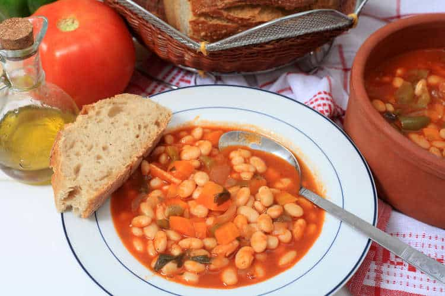

Fasolada

Description:
Greek bean soup (Fasolada) is highly nutritious and filling. Beans are rich in fiber, which when combined with water
or liquid make you feel full for longer. Also high in protein, iron and vitamin B, fasolada soup is perfect for that winter flu!
Olive oil, which is one of the vital ingredients of the traditional Greek bean soup, is one of the primary foods associated with the
heart-healthy Mediterranean diet and many books have been written about its health benefits.
Ingredients:
- 500g dry white kidney beans or cannellini beans or navy beans (18 ounces)
- 3-4 carrots, finely chopped
- 1 large white onion, finely chopped (if you love onions, add one more!)
- 3 stalks of celery, finely chopped
- 130ml extra virgin olive oil (1/2 cup)
- 2 tbsps tomato paste
- A pinch of paprika (hot or sweet, according to preferance)
- Salt and freshly ground pepper, to taste (min 2 flat teaspoons each)
Steps:
- To prepare the fasolada (Greek bean soup), place the beans in a saucepan with plenty of cold water to cover them. Bring to the boil,
turn the heat down to medium and parboil for 30-35 minutes, until slightly tender. Drain in colander and set aside.
- Finely chop the onion, celery and carrots. Add 3-4 tbsps of olive oil in a deep pan, add the chopped vegetables and blend. Sauté for
about 2 minutes and add the tomato paste and continue sautéing for a minute.
- Add the parboiled beans in the pan and pour in enough boiling water to cover the beans and little bit more and blend lightly. Place the
lid on and simmer the fasolada for about 35 minutes, until the beans are tender.
- Towards the end of cooking time, pour in the remaining olive oil and season with salt and pepper. Boil for a few more minutes, until the
soup becomes thick and creamy.
- Serve this traditional Greek bean soup (fasolada) while still steaming hot with a few Kalamata olives and of course some village bread. Enjoy!
Nutrition for one bowl:
- Calories: 339kcal
- Sugar: 5g
- Sodium: 495.2mg
- Fat: 22g
- Saturated Fat: 3g
- Unsaturated Fat: 17g
- Trans Fat: 0g
- Carbohydrates: 29.6g
- Fiber: 8.7g
- Protein: 8.7g
- Cholesterol: 0mg